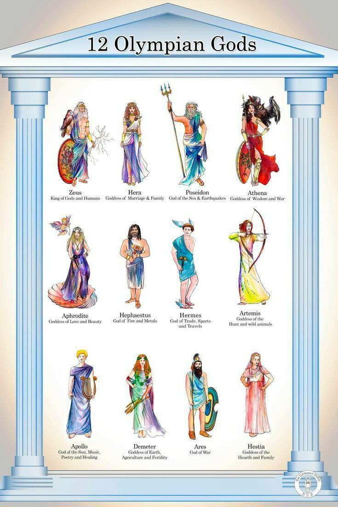
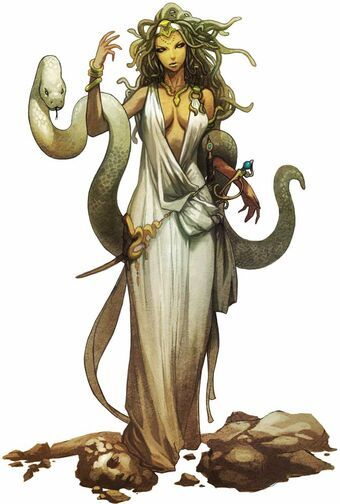
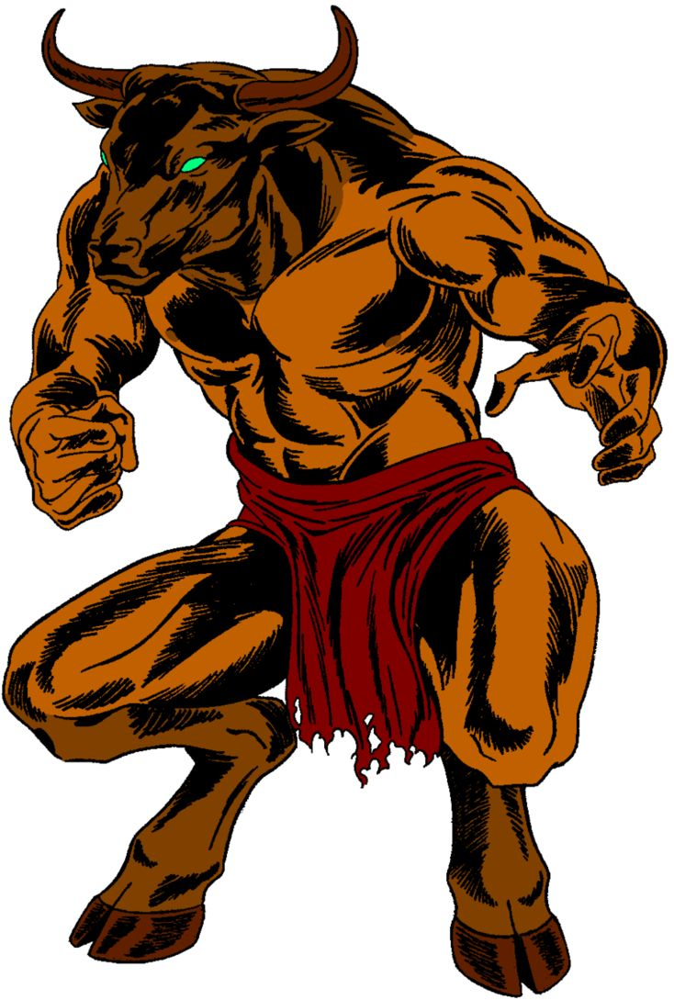
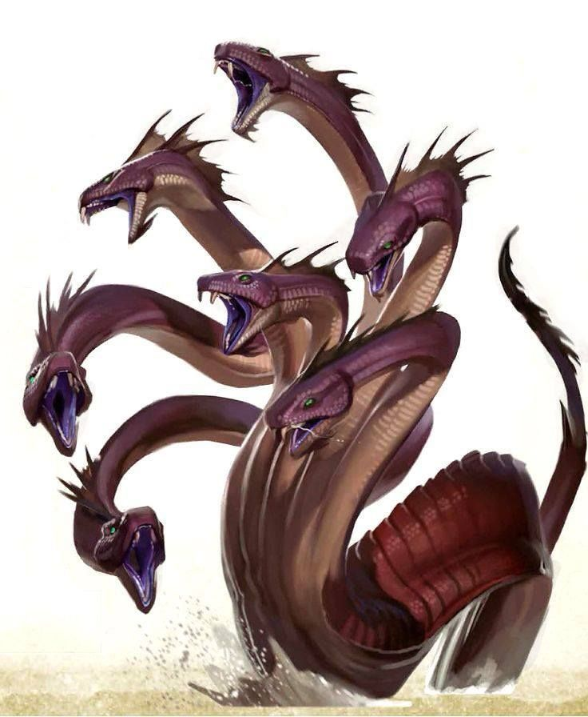
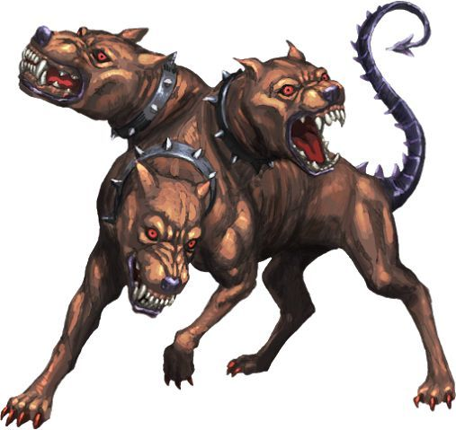
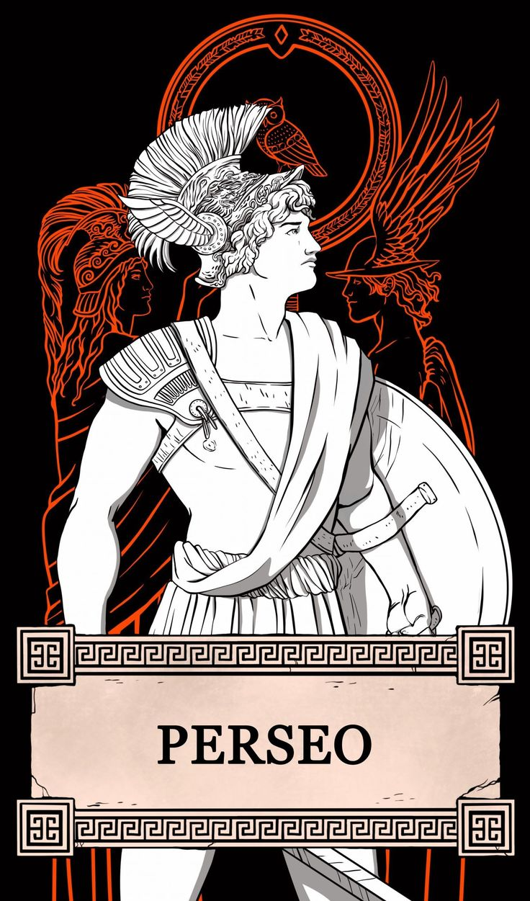
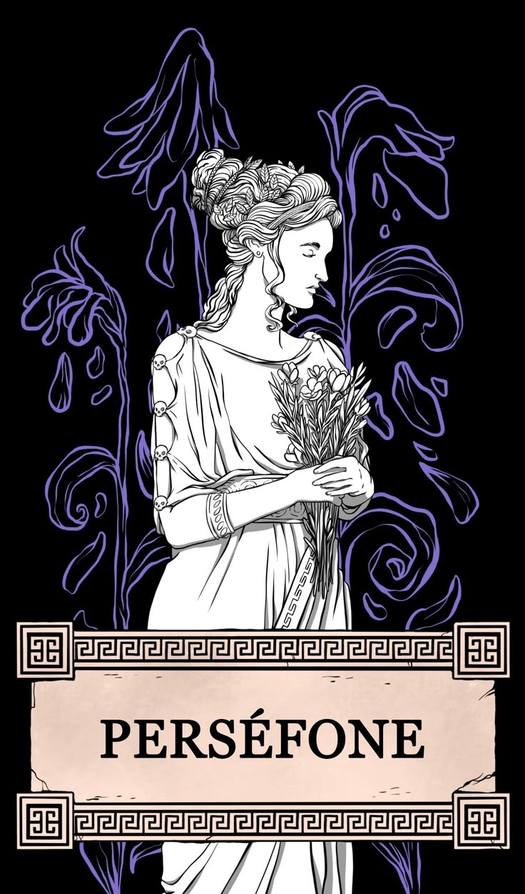

Zeus
Re degli dèi e signore del cielo e dei fulmini.
Un viaggio tra gli dèi, i mostri e gli eroi dell'antica Grecia.
La mitologia greca raccoglie storie dedicate a divinità, eroi, creature fantastiche e grandi avventure. Questi racconti spiegavano la natura, le tradizioni e le qualità umane.

Re degli dèi e signore del cielo e dei fulmini.
Regina degli dèi e dea del matrimonio e della famiglia.
Dio del mare, dei terremoti e dei cavalli.
Dea dell'agricoltura e della fertilità della terra.
Dea della saggezza e della strategia militare.
Dio della musica, della poesia e della profezia.
Dea della caccia e della natura.
Dio della guerra e della battaglia.
Dea dell'amore e della bellezza.
Dio del fuoco e della lavorazione dei metalli.
Messaggero degli dèi e protettore dei viaggiatori.
Dea del focolare domestico, dello stato e della famiglia.
Prima dell'avvento degli dèi dell'Olimpo, l'universo era governato dai Titani, divinità primordiali nate dall'unione tra Urano (il Cielo) e Gea (La Terra). Il loro re, Crono, governava con pugno di ferro ed era tormentato da una terribile profezia: uno dei suoi stessi figli lo avrebbe spodestato, proprio come lui aveva fatto con suo padre. Per evitare questo destino, Crono decise di divorare vivi i suoi figli non appena la sposa Rea li dava alla luce. In questo modo trovarono prigionia nelle sue viscere Istia, Demetra, Era, Ade e Poseidone.
Disperata per la perdita della sua progenie, Rea decise di ribellarsi durante la sesta gravidanza. Si rifugiò segretamente sull'isola di Creta, dove partorì Zeus all'interno di una grotta sul monte Ida, affidandolo alle cure delle ninfe e della capra Amaltea. Per ingannare il marito, Rea avvolse in fasce una pesante pietra e la porse a Crono. Il sovrano dei Titani, accecato dalla paranoia, inghiottì il masso senza accorgersi dello stratagemma.
Divenuto adulto e consapevole del proprio destino, Zeus decise di compiere la sua vendetta. Con l'aiuto della titanide Meti, somministrò a Crono un potente emetico che lo costrinse a vomitare prima la pietra e poi, uno alla volta, tutti i fratelli e le sorelle precedentemente inghiottiti. Essendo divinità immortali, i fratelli erano cresciuti sani e salvi nel ventre paterno e, una volta liberati, si unirono immediatamente a Zeus in una coalizione votata al rovesciamento della vecchia guardia.
Ebbe così inizio la Titanomachia, una guerra cosmica devastante che scosse l'universo per ben dieci anni. Per spezzare l'equilibrio delle forze in campo, Zeus scese nel Tartaro e liberò i Ciclopi e i Centimani (i giganti dalle cento braccia), che erano stati imprigionati da Crono. In segno di gratitudine, i Ciclopi – formidabili fabbri divini – forgiarono per gli dèi le loro armi leggendarie: il fulmine per Zeus, il tridente per Poseidone e l'elmo dell'oscurità per Ade. Grazie a questi alleati e alla potenza delle nuove armi, gli dèi olimpici schiacciarono i Titani, scaraventandoli nel Tartaro e incatenandoli nelle profondità degli inferi.
Dopo la gloriosa vittoria, i tre principali fratelli dei si riunirono per ristabilire un ordine cosmico e si spartirono il dominio del mondo estraendo a sorte i rispettivi regni. Zeus ottenne il cielo, i fulmini e la sovranità assoluta, diventando il re degli dèi dall'alto del Monte Olimpo. Poseidone ricevette il dominio dei mari, degli oceani e il potere di scatenare i terremoti. Ade, infine, ereditò il mondo sotterraneo, diventando il sovrano supremo del regno delle ombre e delle anime dei defunti.

Gorgone con serpenti al posto dei capelli e uno sguardo capace di pietrificare.

Creatura con corpo umano e testa di toro che viveva nel labirinto.

Mostro con molte teste che ricrescevano quando venivano tagliate.

Cane a tre teste che sorvegliava il regno dei morti.

Mostro formato da parti di leone, capra e serpente.

Mostro marino che attaccava le navi di passaggio.

Medusa era una delle tre Gorgoni ed era l'unica mortale. Un tempo rinomata per la sua straordinaria bellezza, fu trasformata in un mostro terrificante con serpenti al posto dei capelli e uno sguardo capace di pietrificare chiunque osasse incrociare i suoi occhi.
L'eroe Perseo, figlio di Zeus, ricevette l'incarico quasi impossibile di portarne la testa al tiranno Polidette. Grazie al prezioso aiuto degli dèi, tra cui lo scudo lucido donatogli da Atena, riuscì a orientarsi osservando soltanto il riflesso di Medusa senza mai guardarla direttamente.
Cogliendola nel sonno, Perseo riuscì a sconfiggerla recidendole il capo con un falcetto adamantino; dal suo corpo nacquero il cavallo alato Pegaso e Crisaore. Infine, consegnò la testa alla dea Atena, che la incastonò sul proprio scudo per usarla come potente simbolo protettivo.

Eracle, chiamato Ercole dai Romani, era figlio di Zeus, il re degli dèi, e della mortale Alcmena. Fin da piccolo dimostrò di possedere una forza straordinaria e un grande coraggio, diventando uno degli eroi più famosi della mitologia greca.
Il re Euristeo gli affidò dodici imprese quasi impossibili, conosciute come le dodici fatiche di Eracle. Queste prove erano molto pericolose e richiedevano forza, intelligenza e astuzia per essere superate.
Tra le sue imprese più famose ci furono la sconfitta del leone di Nemea, dalla pelle invulnerabile, l'uccisione dell'Idra di Lerna, un mostro con molte teste, e la cattura di Cerbero, il feroce cane a tre teste che custodiva il regno dei morti.
Durante le sue avventure Eracle affrontò molti mostri, superò grandi pericoli e dimostrò sempre la sua forza e il suo coraggio. Grazie alle sue imprese diventò un eroe ammirato e conosciuto in tutto il mondo greco.
Dopo una vita piena di avventure e fatiche, Eracle morì e fu accolto tra gli dèi dell'Olimpo da Zeus. In questo modo diventò immortale e venne ricordato come uno dei più grandi eroi della mitologia.

Persefone, chiamata Proserpina dai Romani, era figlia di Zeus, il re degli dèi, e di Demetra, la dea dell'agricoltura e della fertilità. Era una giovane fanciulla amata da tutti per la sua grazia, la sua bellezza e la sua dolcezza.
Un giorno, mentre raccoglieva fiori nei prati, la terra si aprì e Ade, il dio del regno dei morti, la rapì per portarla con sé negli Inferi e farne la sua sposa.
Disperata per la scomparsa della figlia, Demetra smise di far crescere le piante e i frutti, portando sulla Terra un grande inverno e una terribile carestia. Per salvare il mondo, Zeus decise che Persefone avrebbe trascorso metà dell'anno negli Inferi con Ade e l'altra metà sulla Terra con la madre.
Ogni volta che Persefone tornava sulla Terra, Demetra faceva rifiorire la primavera e l'estate; quando la fanciulla tornava negli Inferi, la natura si addormentava dando vita all'autunno e all'inverno.
In questo modo, Persefone divenne sia la regina degli Inferi sia il simbolo del ciclo delle stagioni e della rinascita della natura.